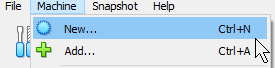

Summary and Schedule
This lesson introduces virtual machines and containers to a novice audience of librarians, subject specialists, and library staff with interest or work that intersects data management, data science, or research computing. The intent is breadth, rather than depth. Prior experience is not required but we assume some familiarity with basic computing concepts and with reproducible research. Those that need a refresher of the latter may consider reviewing the Reproducible Research Workflows lesson.
| Setup Instructions | Download files required for the lesson | |
| Duration: 00h 00m | 1. Introduction |
What are virtual machines and containers? How are they used in open science? |
| Duration: 00h 32m | 2. Virtual machines using VirtualBox |
How do you import and launch a VM using VirtualBox? How do you accomplish common tasks? How and why do you change settings for a VM? |
| Duration: 00h 44m | 3. Basics of Containers with Docker |
What is a Docker image? What is a Docker container? How do you start and stop a container? How do retrieve output from a container to a local machine? |
| Duration: 01h 04m | 4. Creating Containers with Docker | How do you create new Docker images? |
| Duration: 01h 16m | Finish |
The actual schedule may vary slightly depending on the topics and exercises chosen by the instructor.
Data Sets
We will be using a prebuilt virtual machine that already contains most things needed to get started. Download the correct Zip file to your system but do not do anything else with it at the moment. We will import it as part of the virtual machines episode.
This lesson will use a virtual machine for both the virtual machine AND container episodes. Instructors will be responsible for creating these virtual machine images and distributing them to students.
Due to their size, it is critical that students download the VM images prior to the workshop
Building
For compatibility with both x86-64 and ARM architectures, we will use the standard Debian distribution to base our virutal machine images on.
Two VirtualBox images need to be built one for x86-64 (i.e., Windows and Intel-based Mac) and one for ARM64 (Apple M1, M2).
First, decide which image you want to build
- x86-64 architecture (labeled as [x64])
- ARM64 architecture (labeled as [arm])
You will need a machine with the appropriate architecture to build the corresponding image, and an internet connection
Then proceed with the steps below, following specific instructions for your specific architecture ([x64] or [arm]).
-
Download and
install VirtualBox 7 or greater for your operating system (pick one
below)
- Windows: download the distribution for Windows Hosts [x64]
- Intel Mac: download the distribution for macOS / Intel Hosts [x64]
- Linux: download the Linux distribution (or install from your package manager)[x64]
- M1, M2, etc Mac: download the distribution for macOS / Apple Silicon Hosts [arm]
-
Download the
appropriate Debian base distribution from the Small CDs or USB Sticks
section (pick one below)
- AMD64 plain netinst ISO [x64]
- ARM64 [arm]
- Launch VirtualBox, accept all messages, and create a new virtual machine 
- Select the downloaded file in the Create Virtual Machine wizard.
- Leave all the options at their defaults but check the box to skip unattended installation. The unattended installation installs a heavier graphical interface and more packages that bloat the size of the image. Reduce the memory to 1 or 1.5 GB In earlier versions of VirtualBox 7, the unattended installation could be done as it did not install a graphical interface for you.
- When prompted, set the root password to
changemeand create a new uservboxuserwith the passwordchangeme. - When prompted, do not install a graphical desktop.
- Once the installation finishes and the system reboots, you should see a terminal prompt.
- Install XFCE (the graphical user interface we will use) and Docker.
Type the following on the command prompt
-
su root(when prompted, enter the password from above) apt updateapt install git curl sudo firefox-esrgit clone https://github.com/coonrad/Debian-Xfce4-Minimal-Install.gitcd Debian-Xfce4-Minimal-Install./xfce-install.shcurl -fsSL https://get.docker.com -o get-docker.shsh get-docker.shsystemctl reboot
-
- After the virtual machine reboots, a graphical login window should appear.
- Log in with the same username and password as above
- Test Docker installation. From the graphical desktop, open a
terminal window and type
-
sudo docker ps(type in the same password from before if prompted)
-
- You should see output that starts with
CONTAINER ID... - If Firefox is not installed (check by typing
firefoxat the command prompt).sudo apt install firefox-esr
- Turn off the virtual machine
- Click the ‘x’ at the top right of the VirtualBox window
- Select the option ‘Send the shutdown signal’
 VirtualBox shut down virtual machine
VirtualBox shut down virtual machine
- Package up the virtual machine for distribution
- Open the virtual machine files on your file system by selecting Show in Explorer. Note that the text may appear differently depending on your host operating system. E.g. on Mac, it will say Show in Finder.
- Show in Explorer
- Select the .vbox file, the .vdi file (and for [arm] only, the .nvram file) and copy them to another folder on your system.
- [arm] only: open the .vbox file in a text editor and look for the
line that starts with
<NVRAM path=. - [arm] only: ensure that the path to the NVRAM file is set to the file name of the NVRAM file you copied, without any path. Save the file.
- Create a Zip file with the files.
- Repeat this entire process to create a virtual machine for the other architecture.
Hosting
The files can be hosted on any online file sharing service with sufficient space like Box, Google Drive, DropBox, etc.
If there are many learners, remain mindful of any bandwidth limits. For example, Google Drive may cut off access to publicly shared files that exceed a certain amount of transferred data within a certain time period. Therefore, you may wish to host the file on two different services or accounts.
Software Setup
VirtualBox
VirtualBox is the software we will be using for this lesson. Your computer must meet these requirements:
- A recent Intel or AMD CPU
- Windows, Linux, or MacOS (see the sections below for additional information).
- Administrative access
- 8 GB of total memory
- 7 GB of free disk space
Most laptops that are newer than 5-6 years should work.
The prebuilt virtual machine image you downloaded previously contains a preconfigured Docker installation which will be used for the containers portion of the lesson.
Although VirtualBox runs under older version of Windows, at least Windows 10 v1803 is needed to minimize the chance for conflicts if there is other virtualization software installed (e.g., Hyper-V).
- On the downloads page under the VirtualBox Platform Packages section, select Windows hosts.
- Install the downloaded package, leaving all the options at their defaults.
During installation, you may get warnings about missing Python core / win32api dependencies. You may safely ignore this warning as it relates to scripting VirtualBox with Python which we will not be doing.
There are different download packages depending if you have an Intel Mac or an If you have a Mac with an Intel CPU or an Apple Arm CPU (M1, M2, or M3).
- Intel Macs: On the downloads page under the VirtualBox Platform Packages section, select MacOS / Intel hosts
- Apple M1, M2, or M3: downloads page under the VirtualBox Platform Packages section, select MacOS / Apple Silicon hosts. This version is new and may not work for you.
Install the downloaded package, leaving all the options at their defaults. Upon first run, you will need to grant the various system permissions it asks you for.
If VirtualBox crashes on startup, even after granting permissions (may happen for Apple Silicon hosts), you may not be able to follow the virtual machines portion of the lesson. You may wish to install Docker directly on your machine if you would still like to follow the containers portion of the lesson.
We recommend installing VirtualBox from your distribution’s package manager. If the version that comes with your distribution is different than the version used in this lesson, the screenshots might differ. If you wish to install the latest version, follow the instructions for your distribution.